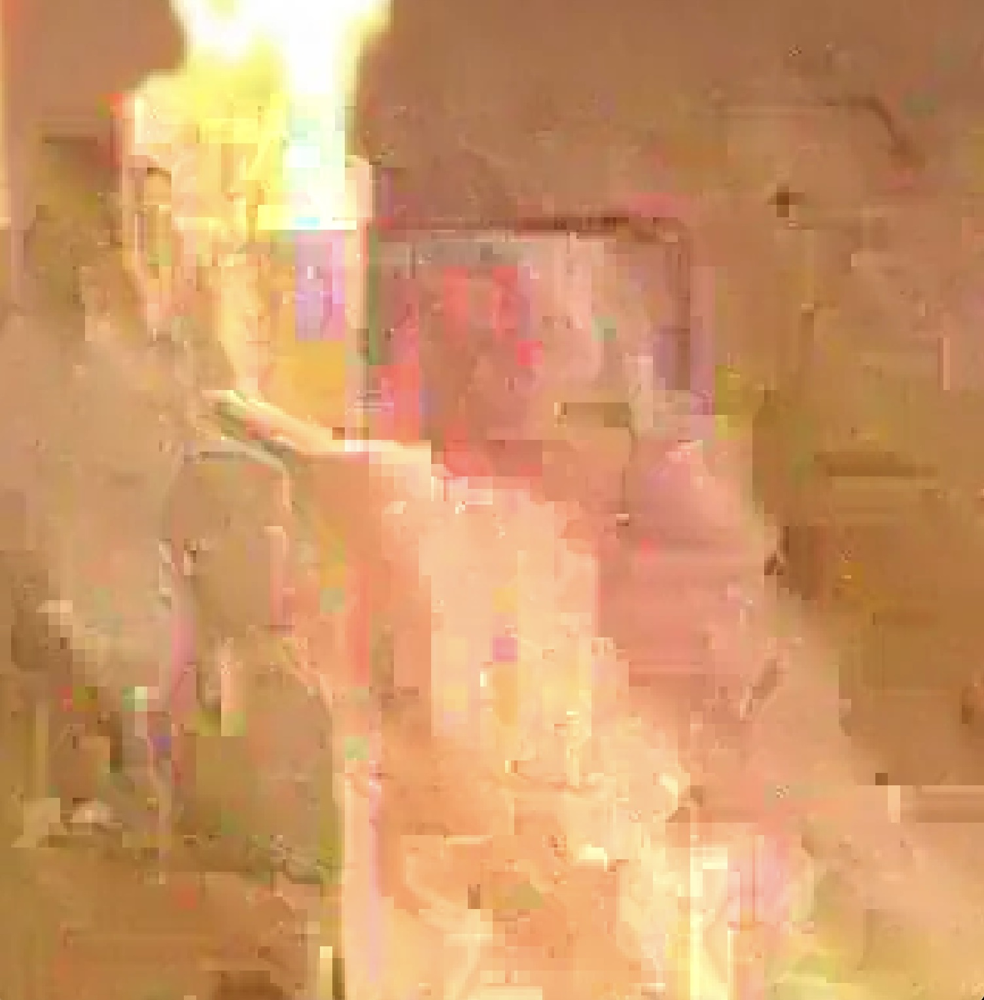
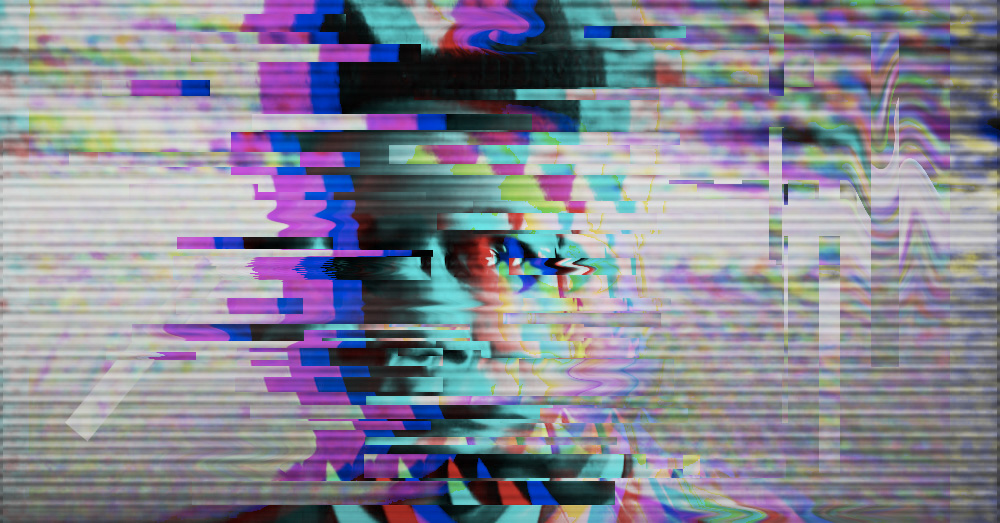

This is my first glitch project I made and it's glitched entirely on rapper Travis Scott through the textEdit app on Mac. You can't see because I glitched almost the entirety of the picture and I made it cool and simplistic just by messing up a small portion of its data. Honestly, I wouldn't pass this piece off as what an expert artist would do but I like it though.

I made another simplistic glitch effect of Tyler, The Creator in honor of his recent album CHROMAKOPIA which was released on October 2024. It was a really great album so I settled with glitching Tyler. It's so hard to explain how I did it so if you want to see how I created this simple glitch effect on him, you can watch the tutorial here.